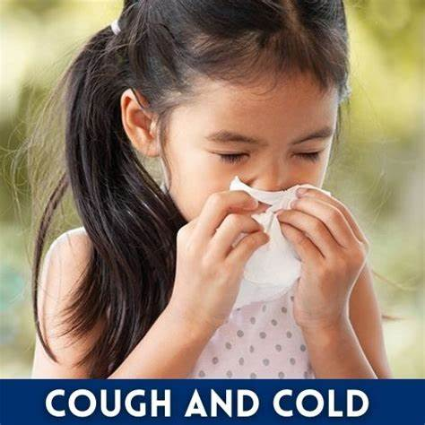
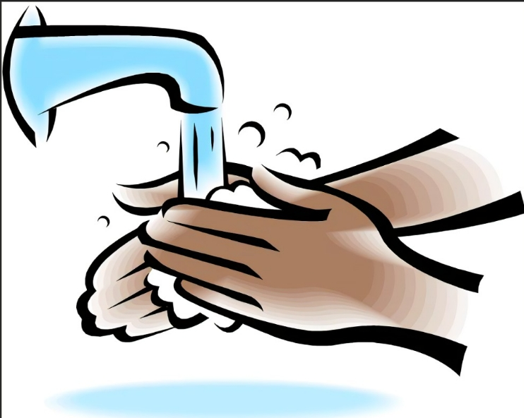

Reduced Risk of Illness
Practicing good hygiene, like handwashing, reduces the spread of germs and minimizes the risk of contracting infections.
Improved Physical Well-being
Maintaining a healthy lifestyle, including exercise and a balanced diet, strengthens the immune system and promotes physical health.
Enhanced Social Interactions
Good hygiene makes individuals feel confident and comfortable interacting with others, promoting positive social relationships.

Infection
Diseases
Common infections like the flu or cold can spread easily and affect overall health. Proper hygiene practices are essential to prevent transmission.
Chronic
Conditions
Conditions like heart diseases, diabetes, and cancer are often influenced by lifestyle choices and can be managed through preventive measures.
Mental Health Challenges
Mental health issues like anxiety and depression are prevalent and can impact daily life. It's crucial to seek support and prioritize mental well-being.
Cleanliness
practicing good personal hygiene helps keep your body clean and free from dirt,
germs and odors and
can improve your overall sense of well-being.
Diseases Prevention
Proper Hygiene habits like handswashing can reduce the risk of contracting and
seperating illness
Self-Confidence
Feeling clean and well-groomed can boost your self-esteem and help you fell your best
